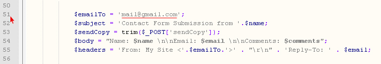
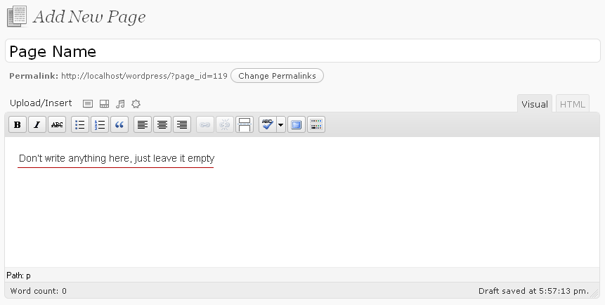
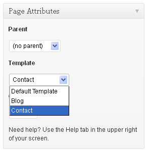
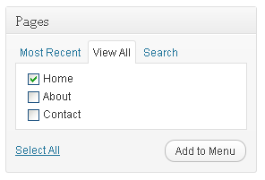
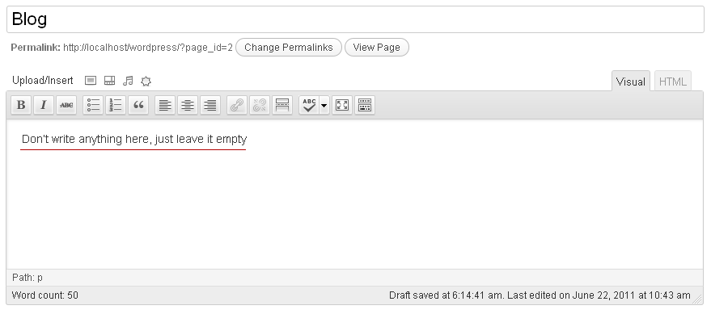
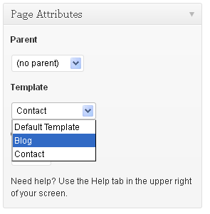

THE POST WORDPRESS THEME
A Free Premium Wordpress Theme
Designed by:Moonthemes.com
Theme Version:Free - Must Keep Our Designer Footer Links As is.
Copyright Removal:
No Designer Footer Links Info etc Required - Buy Now
OVERVIEW
Moon Themes offer Premium Wordpress Themes.
-= IMPORTANT NOTE -=
Do not change any folder or file names.
Wordpress 3.0+
Host Server with PHP5+
You have done the first step by extracting the zip folder, now here
you will have several files including, the Post Wordpress theme files,
plugin files, Documentation and THEME_License.txt.
Before you install the theme, you must read and agree to MoonThemes
license in order to use this premium theme which you have downloaded.
Carefully read and be sure you understand the MoonThemes.com
license usage.
Inside the plugin folder you will see plugins named "wp-pagenavi" and "limit-post.php"
upload that pluings to the "wp-content/plugins"
folder in your Wordpress directory online in your hosting account
via FTP access.
Now if that plugin, has been uploaded successfully to your server, than
access the plugin panel in your Wordpress Administration Panels and
check out through the list of plugins to find out your new plugin which
you just uploaded. Once you find it than click on the "Activate link" to
turn that plugin on.
Inside the ZIP folder you will see a folder named "posttheme" upload the "posttheme" folder to the
"wp-content/themes" in your Wordpress directory online in your hosting
account via FTP access.
Now if you have uploaded the theme and the plugin to the correct
directory, so activating your new theme is click away.
1. Login in to the Wordpress Administration Panel.
2. Select the Appearance Panel, than click on Themes.
3. Now you will see your theme here, activate it.
You can change the logo image, using the post theme control panel.
Make sure you use the correct image URL path.
So in order to replace the logo, you must Enter the URL of your
custom image like below: also avoid signs like,
?
=
etc, also avoid
any extra empty
spaces.
See the examples below:-
WRONG : www.yoursite.com/images/mylogo.jpg
WRONG : http://yoursite.com/imgaes/mylogo.jpg
WRONG : www.yoursite.com/?images=mylogo.jpg
CORRECT : http://www.yoursite.com/images/mylogo.jpg
No Custom Field, use the built in wordpress post thumbnail. its easy, watch the screencast.
Internet connection is required.
The Post Theme has a custom contact page, so for receiving emails, you need to set up your email address. It's easy, in the theme folder, open up contact.php file and than go to line number 51 and change the mail@gmail.com
with your email address. and than save the file.

For adding the contact page, go to add new page and create a page, and give it any name for example "contact" do not write any thing on the notepad window,

than on the right pages attributes
you will see a drop down menu below the "Template" than select contact and publihs the page,

Note: You must add save these pages into naviagtion menu, by using wordpress 3.0 custom menus.
To create a custom menu, give it a name and click Create
Menu. Then choose items like pages, categories or custom links from the left column to add to this menu.
After you have added your items, drag and drop to put them in the order
you want. You can also click each item to reveal additional configuration options.
Note:
this screencast is from gabix theme, but the Post theme has four section for menus, so you can create 4 menus using the same method.
When you have finished building your custom menu, make sure you click the Save Menu button.
Watch the Screencast, you must have internet connection.
10. ADDING HOME HIGHLIGHTED LINK INTO CUSTOM MENU -Back to Top
Go to custom menus and on left pages, select view all and check the Home and add to
menu and save the menu.

If you select any layout from the theme control panel, so this will be your main website layout, it means when visitors visit
your site the first time, so they will see this layout, as main page. However
if you wish to have add a blog layout into the menu, for example you want your main layout the homepage, and also you wish to add a blog layout,
into the menu, so than simply do this:.
Go to add new page and create a page, and give it any name for example "Blog" do not write any thing on the notepad window,

than on the right pages attributes
you will see a drop down menu below the "Template" than select the blog and publihs the page,

Note: You must add save this page into naviagtion menu, by using wordpress 3.0 custom menus.
12. SLIDER AND SIDEBAR FEATURED POSTS SETTINGS -Back to Top
Slider Setting: Create a catgory for slider, create posts, add thumbnail images into posts, and add the posts into slider category and publish, than go to Post theme control panel, and choose the catgory for slider, and set the number of posts.
Sidebar Feature Posts Setting: The method is same as the slider setting.